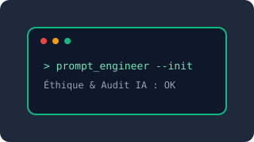

Présentation des technologies créatrices d'emplois

L'émergence de l'ingénierie de prompt et de la gouvernance IA.
Les Grands Modèles de Langage (LLM)
Le déploiement massif des modèles fondationnels (GPT, Claude, Gemini) crée un besoin
inédit de spécialistes capables de dialoguer efficacement avec ces systèmes, de structurer
leurs contextes et d'optimiser leurs réponses en entreprise.
La régulation et l'éthique algorithmique
Avec l'entrée en vigueur de cadres comme l'AI Act européen, les organisations
doivent impérativement contrôler les biais, garantir la transparence des décisions automatisées
et protéger la vie privée des utilisateurs.
Pourquoi auditer les algorithmes ?
Un algorithme entraîné sur des données biaisées peut reproduire des discriminations. L'audit garantit l'équité et la conformité légale.
Liste des métiers impactés
1. Ingénieur en Prompt (Prompt Engineer)
Technologie responsable : Grands Modèles de Langage (LLM)
Expert chargé de concevoir, tester et optimiser des instructions textuelles complexes
afin d'obtenir des résultats fiables, précis et sécurisés de la part des IA génératives.
2. Éthicien de l'Intelligence Artificielle
Technologie responsable : Systèmes décisionnels autonomes
Veille à ce que la conception et l'usage de l'IA respectent les valeurs humaines,
l'équité sociale, la protection des données et les réglementations en vigueur.
3. Auditeur d'algorithmes
Technologie responsable : Gouvernance & IA explicable (XAI)
Analyse le comportement des modèles prédictifs afin de détecter d'éventuels biais,
failles de sécurité ou dérives de performance avant leur mise en production.
Principales compétences à acquérir
Pour intégrer ces professions inédites et d'avenir, voici les compétences stratégiques à développer :